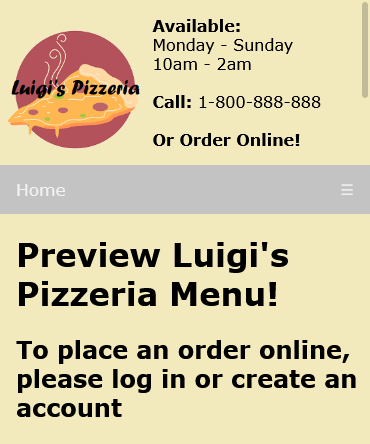

About the Group Project Pizza Restaurant
Click to go to the GitHub Repo
Click to view the Project Document
Click to view the Backlog & Sprints
Overview
The Pizza Restaurant college group project occurred Spring 2020. Me and two other teammates had to implement an automated, easy-to-use, application for: accounts, orders, and inventory. Our collaboration and delivery depended on the use of the Scrum Framework.
Technologies
HTML, CSS, Firebase, JavaScript
My Project Perspective
Honestly, the development for this project is foggy in my mind. I worked as the frontend developer and maintained the product backlog.
Frontend Implementations:
-User Interface
-Displaying Content & Images
-Screen Scaling
I developed most of what would be consider as the outer shell of the project. One of the other teammates took up the backend with Firebase. They insisted and eventually proved that the tool would tackle the project requirements.
Backend Accomplishments
-Create/Store/Edit Customer, Employee and Manager Accounts
-Set Pages to have certain View Permissions
-Product Item Selection and Modification
-Cart Functionality
-Order Data Distribution
This college project was a total of eleven weeks with four sprints. Overall, the development process was smooth, and resulted in a project with lots of functionality.
Screenshot
Example of Site Heading
Click to go to the GitHub Repo
Click to view the Project Document
Click to view the Backlog & Sprints